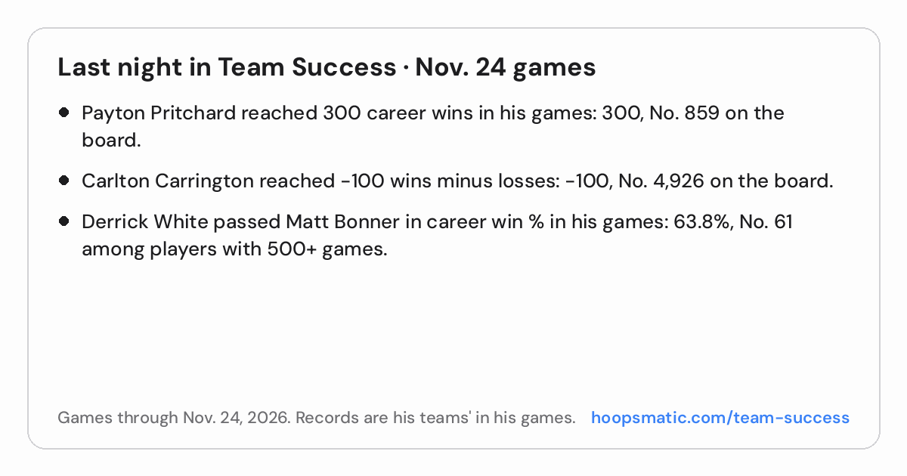

Last night in Team Success · Nov. 24 games
Nov. 25, 2026
 Payton Pritchard reached 300 career wins in his games: 300, No. 859 on the board.
Payton Pritchard reached 300 career wins in his games: 300, No. 859 on the board. Carlton Carrington reached −100 wins minus losses: −100, No. 4,926 on the board.
Carlton Carrington reached −100 wins minus losses: −100, No. 4,926 on the board. Derrick White passed Matt Bonner in career win % in his games: 63.8%, No. 61 among players with 500+ games.
Derrick White passed Matt Bonner in career win % in his games: 63.8%, No. 61 among players with 500+ games.

 Zach LaVine faces the Golden State Warriors tonight. His teams are 2–23 against them in the regular season, an 8.0% win rate.
Zach LaVine faces the Golden State Warriors tonight. His teams are 2–23 against them in the regular season, an 8.0% win rate. Clint Capela faces the Phoenix Suns tonight. His teams are 22–5 against them in the regular season, an 81.5% win rate.
Clint Capela faces the Phoenix Suns tonight. His teams are 22–5 against them in the regular season, an 81.5% win rate.
Nov. 25, 2026 · 3 games on Nov. 24, 2026 · each item is a template filled from the data and links to the row or games that prove it · earlier lists · the rules
